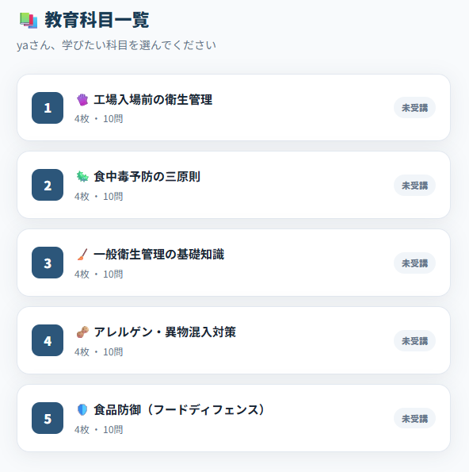
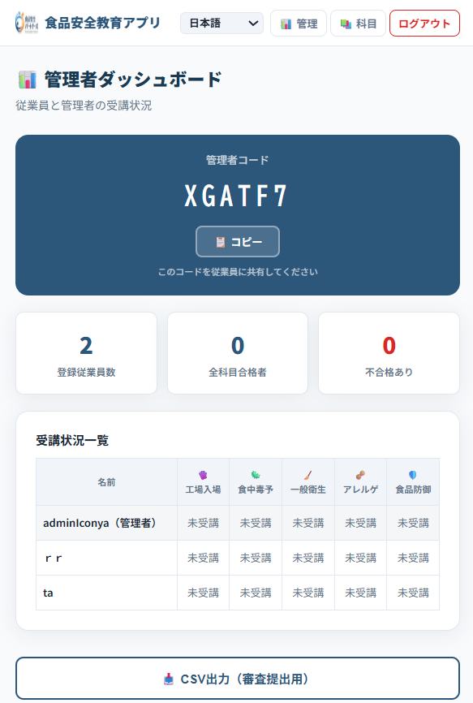

スマホひとつで現場からすぐ受講！
座学の時間が取れない現場でも、スキマ時間で確かな知識の定着を図る、
食品工場のための衛生教育アプリです。（さらに4言語にも標準対応）
※Webアプリのためインストール操作は不要です
シフト制で働くパートやアルバイトを集めて研修する時間が現場にない。新人が入るたびに同じ説明を繰り返す余裕がなく、現場でのOJT任せになってしまっている。
ルールブックを渡して「読んでおいて」で済ませているが、本当に理解しているかがわからない。テストを作るのも手間がかかるし、採点する時間もない。
日本語のルールを説明しても、アレルゲンや交差汚染などの専門的なリスクが正しく伝わっているか不安。言語の壁による認識のズレが事故に繋がらないか心配。

工場入場前のルールから、食中毒予防、アレルゲン対策、食品防御まで、食品工場で働くすべての従業員が知っておくべき必須知識を5つのコースにまとめて収録しています。
学習したい科目をタップするだけで、すぐに教育を開始できます。

専用の「管理者ダッシュボード」をご用意。アプリ内の設定画面から事業所専用の管理者コードをご自身で発行し、従業員に共有することで、全員の受講状況（未受講/合格など）をリアルタイムで確認・一元管理できるようになります。
また、監査や審査のエビデンスとして提出するための受講履歴一覧を、ボタン一つでCSVデータとして出力・ダウンロードすることが可能です。
ブラウザで動くWebアプリなので、インストール不要。共有されたURLにアクセスするだけで、現場のスキマ時間にすぐ教育を開始できます。
日本語・英語・ベトナム語・中国語にワンタッチで切り替え。母国語で学ぶことで、HACCPや衛生管理の難しい概念も正確に伝わります。
学習後に確認テストを実施。ランダムに出題される問題を解くことで、勘ではなく本当の理解度を図ることができ、即時フィードバックが得られます。
食品安全の教育は一度教えれば終わりではありません。アプリなら手元でいつでも反復学習とテストができるため、ルールの形がい化を防ぎます。
小難しい理論ではなく、「なぜ手を洗うべきか」「なぜ手袋を変えるか」など現場ですぐに活かせる実践的な内容に絞っています。
単なる読み物ではなく、「学習→テスト→結果確認」のサイクルを回すことで、知識の定着度合いが飛躍的に高まります。
現場の衛生意識向上のための第一歩。
多言語対応によるスムーズな教育体験を、完全無料でご提供します。
※お使いのスマートフォンやPCのブラウザですぐに動きます
HACCP・JFS-Bの最新ノウハウをお届けするメルマガ（いつでも解除可能）に登録すると、すぐに各種アプリをご利用いただけます。
A. はい、現在の受講モード・テストモードは完全に無料ですべての機能をご利用いただけます。
A. 現在、日本語(JA)、英語(EN)、ベトナム語(VI)、中国語(ZH)の4ヶ国語に対応しており、画面右上のメニューからいつでも切り替えることができます。
A. いいえ、Webアプリケーションとして設計されているためブラウザ（SafariやChromeなど）からアクセスするだけで動作します。インストールの必要はありません。
A. はい、可能です。専用の「管理者ダッシュボード」機能をご用意しており、アプリ内で事業所ごとの管理者コード（例：XGATF7）を発行することで、従業員の受講状況（未受講・合格などのステータス）をリアルタイムで一覧表示できます。また、審査提出用として記録をCSV形式でダウンロードすることも可能です。